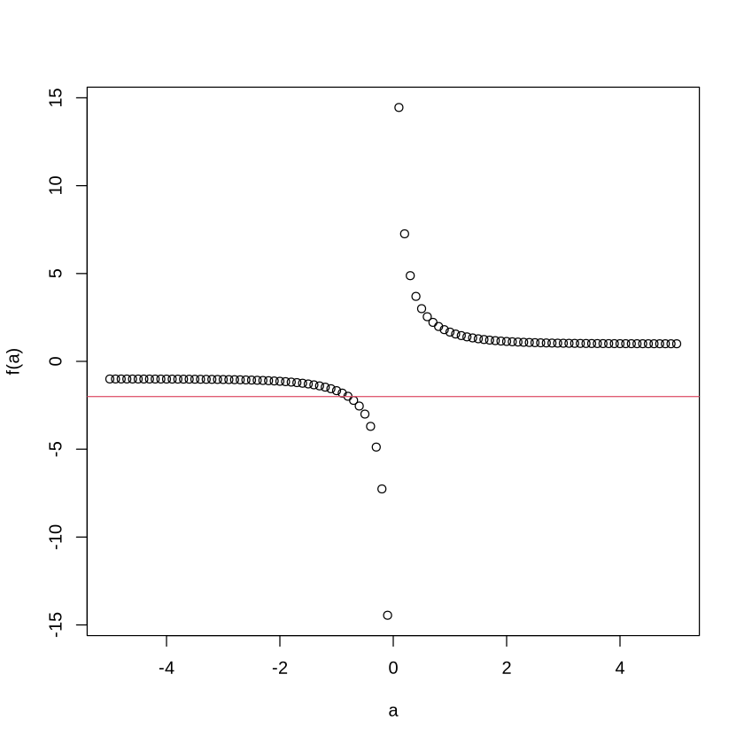
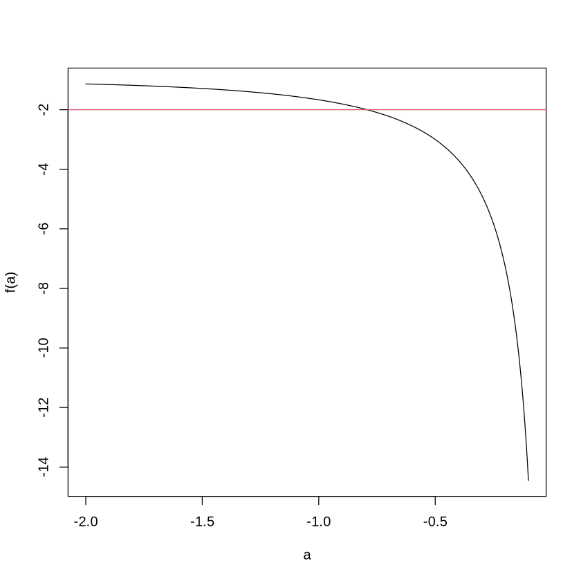

x=1
sin(pi/4*(2+x)) * sin(pi/4*(2-x))
0.5
2024수능-19. 함수 \(f(x) = \sin \frac{\pi}{4} x\) 할 때, \(0 < x < 16\)에서 부등식
\[ f(2+x) f(2-x) < \frac{1}{4} \]
을 만족시키는 모든 자연수 \(x\)의 값의 합을 구하시오. [3점]
(풀이1)
x=1
sin(pi/4*(2+x)) * sin(pi/4*(2-x))…
x=15
sin(pi/4*(2+x)) * sin(pi/4*(2-x))(풀이2)
x = 1:15f = function(x){
sin(pi/4*x)
}x[f(2+x)*f(2-x) < 1/4]sum(x[f(2+x)*f(2-x) < 1/4])(풀이3)
s = 0
for(x in 1:15){
print(f(2+x)*f(2-x))
}[1] 0.5
[1] 0
[1] 0.5
[1] 1
[1] 0.5
[1] 2.99952e-32
[1] 0.5
[1] 1
[1] 0.5
[1] 8.998559e-32
[1] 0.5
[1] 1
[1] 0.5
[1] 1.799712e-31
[1] 0.5s = 0
for(x in 1:15){
print(f(2+x)*f(2-x) < 1/4)
}[1] FALSE
[1] TRUE
[1] FALSE
[1] FALSE
[1] FALSE
[1] TRUE
[1] FALSE
[1] FALSE
[1] FALSE
[1] TRUE
[1] FALSE
[1] FALSE
[1] FALSE
[1] TRUE
[1] FALSEs = 0
for(x in 1:15){
if(f(2+x)*f(2-x) < 1/4){
print(x)
}
}[1] 2
[1] 6
[1] 10
[1] 14s = 0
for(x in 1:15){
if(f(2+x)*f(2-x) < 1/4){
s = s+x
}
}
s- 예시1
2>3- 예시2
x = 1:5
x>3x<5x>=3x<=5x==3벡터의 원소에 순서대로 번호를 매겨서 뽑는 방식
# 예제1– 첫 원소를 뽑고싶다.
x<-c(1,2,-2,4,5,-5,6)
xx[1]#
# 예제2 – 세번째 원소를 뽑고싶다.
x<-c(1,2,-2,4,5,-5,6)
xx[3]#
# 예제3 – 첫번째부터 세번째까지의 원소를 뽑고싶다.
x<-c(1,2,-2,4,5,-5,6)
xx[1:3]x[c(1,2,3)][1] 1 2 -2#
# 예제4 – 2,5,6 번째의 원소를 뽑고싶다면?
x<-c(1,2,-2,4,5,-5,6)
xx[c(2,5,6)]#
# 예제5 – 3번째 원소를 제외하고 호출
x<-c(1,2,-2,4,5,-5,6)
xx[-3]# 예제6 – 3,4번째의 원소를 제외하고 호출
x[c(-3,-4)]x[-(3:4)]어떠한 조건을 주고, 그 조건에 만족하는 원소 (혹은 만족하지 않는 원소)를 뽑는 방식
# 예제1 – 양수의 원소를 뽑는다.
x<-c(1,2,-2,4,5,-5,6)
xx>0x[x>0][1] 1 2 4 5 6#
# 예제2 – 3보다 큰 원소를 뽑는 방법
x<-c(1,2,-2,4,5,-5,6)
xx[x>3]#
# 예제3 – 3번째 원소를 뽑는방법
x<-c(1,2,-2,4,5,-5,6)
xarr = c(FALSE, FALSE, TRUE, FALSE, FALSE, FALSE, FALSE)
arrx[arr]#
# 예제4 – 값이 -2인 원소를 뽑아라.
x<-c(1,2,-2,4,5,-5,6)
xx[x == -2]#
# 예제4 – 값이 -1.5와 가장 가까운 원소를 뽑아라.
x<-c(1,2,-2,4,5,-5,6)
xabs(x+1.5) == min(abs(x+1.5))x[abs(x+1.5) == min(abs(x+1.5))]#
# 예제5 – 값이 0.5와 가장 가까운 원소를 뽑아라.
x = rnorm(100)min(abs(x - 0.5))x[abs(x - 0.5) == min(abs(x - 0.5))]#
2010(나)6월평가원-4. 실수 \(a\) 가
\[
\frac{2^a + 2^{-a}}{2^a - 2^{-a}} = -2
\] 를 만족시킬 때, \(4^a + 4^{-a}\) 의 값은?
(풀이)
f = function(a){
(2^a + 2^(-a))/(2^a - 2^(-a))
} a = -50:50/10
plot(a,f(a))
abline(h=-2,col=2)
a = seq(from=-2,to=-0.1,by=0.0001)
plot(a,f(a),type='l')
abline(h=-2,col=2)
a[abs(f(a)+2) == min(abs(f(a)+2))]f(-0.7925)4^(-0.7925)+4^(0.7925)c(5/2, 10/3, 17/4, 26/5, 37/6)2024수능-16. 방정식 \(3^{x-8} = \left(\frac{1}{27}\right)^x\) 을 만족시키는 실수 \(x\)의 값을 구하시오. [3점]
(풀이)
x = seq(from = -5, to = 5, by=0.1)
plot(x,3^(x-8),type='l')
lines(x,(1/27)^x,col=2)
x[(abs(3^(x-8) - (1/27)^x)) == min(abs(3^(x-8) - (1/27)^x))]2021(가)9월평가원-10. 수열 \(\{a_n\}\)은 \(a_1 = 12\)이고, 모든 자연수 \(n\)에 대하여
\[
a_{n+1} + a_n = (-1)^{n+1} \times n
\] 을 만족시킨다. \(a_k > a_1\)인 자연수 \(k\)의 최소값은?
(풀이1)
a = 12
for(n in 1:10){
a = (-1)^(n+1) * n - a
print(a)
}[1] -11
[1] 9
[1] -6
[1] 2
[1] 3
[1] -9
[1] 16
[1] -24
[1] 33
[1] -43(풀이2)
a = c()
a[1]=12
for(n in 1:10){
a[n+1] = (-1)^(n+1) * n - a[n]
}
a(1:10)[a>12]